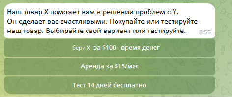

Краткое описание бота
(для быстрого ознакомления)
Главное назначение:
Таким образом автоматическое повторение или показ необходимых сообщений может увеличить вероятность получить нового клиента на покупку. Вручную уследить за этими событиями сверхтрудно, если потенциальных покупателей будет несколько. И даже для одного это требует немалых усилий.
Детальное описание бота
Предлагаемый бот дает возможность автоматически реагировать на событие подписки на ваш канал.
Сразу после нажатия на кнопку подписки бот добавляет себя в спиcок чатов пользователя. (Пользователь - это тот, кто подписался на ваш канал)
В окно бота выводятся текстовое сообщение и кнопка. Например:
«Например» здесь означает то, что любой текст здесь может быть другим, кроме того в любом сообщении можно добавлять ссылки на сайты и на телеграм.
После этого бот находится в режиме ожидания. Если пользователь заинтересовался и нажал на кнопку, то бот запоминает этот момент времени и выводит в диалог текстовое сообщение и три кнопки, например:

Если далее пользователь ничего не нажимает, то через день он получает в окно бота напоминание, например:
Если пользователь и после этого ничего не покупает и не арендует, то
на второй день он получит последнее напоминание, например:
В случае, если пользователь после первого появления трех кнопок
Выбирает первую или вторую, то ему выводится сообщение из ссылкой на оплату, контактами для связи или ссылкой на сайт, где можно оплатить и т. д. После этого предположительно вы передаете товар или он покупает его через ваш магазин или сайт.
В случае нажатия на кнопку Тест… бот запоминает время нажатия и выводит сообщение со ссылками на оплату или контакты. Через это сообщение пользователь аналогично получает свой продукт. Но этот вариант рассчитан на продукты, которые можно дать в ареду, например программы.
На десятый день (или другой) от нажатия на кнопку Тест бот дает пользователю напоминание и возможность сделать покупку раньше. Выводится ссобщение и кнопка для покупки (для удобства она еще раз повторяется) Например:
Если пользователь этим не воспользовался, то на 14-й (или любой другой заданный) день бот дает сообщение вам (в чат с этим ботом) и пользователю. Вы отключаете программу или забираете товар. Пример сообщения:
Или
Настройка бота
Все сообщения и все надписи на кнопках вы задаете сами с помощью файла, содержащего все тексты, а также другие настройки. Файл должен называться config_bot.py Вот пример такого файла. Редактировать его можно даже в Блокноте, нужно следить, чтобы каждая строка в кавычках не имела символов перехода на новую строку, то есть не нужно посреди кавычек нажимать Enter!
# це файл config_bot.py
# тексти в повідомленнях (текстах) і на кнопках, позначення: _TXT - повідомлення, _BTN - кнопка
# щоб зробити перехід на нову строку, треба поставити "\n"
# API_TOKEN ключ вашего бота из @BotFather
# CHANNEL_USERNAME юзернейм вашого канала типу @username (обязательно)
# CHANNEL_ID_1 идентификатор вашего телеграма полученный из @userinfobot
# BGN_TXT - текст після підписки
# LID_BTN - кнопка після підписки
# LID_TXT - текст після натискання на LID_BTN
# TEST1_TXT - показується один раз після підписки, слідуючі натискання на TEST_BTN його не виводять
# TEST2_TXT - завжди виводиться при натискання на TEST_BTN
# LID_TIME1_TXT - текст через LID_TIME1 после нажатия на LID_BTN (только раз после подписки будет)
# LID_TIME2_TXT - текст через LID_TIME2 после нажатия на LID_BTN (только раз после подписки будет)
# TEST_TIME1_TXT - текст через TEST_TIME1 после нажатия на TEST_BTN (только раз )
# TEST_TIME2_TXT - текст через TEST_TIME2 после нажатия на TEST_BTN (только раз )
API_TOKEN = "5129449329:AAG6BNXe...........m_sBqUJnjeeRq5_8" # ваш бот
CHANNEL_USERNAME = "@Channel_your"
CHANNEL_ID_1 = 903411450
BGN_TXT="Вы подписались на канал! Вот ваш шаг к продажам!"
LID_BTN="Взрывные продажи с лид-магнитом"
LID_TXT="Лид-магнит ваш! Хотите больше продаж? \nПереходите по ссылке: https://vlad/output.html"
BAY_BTN="Бери бота за $100 - время денег"
BAY_TXT="Вот ссылка на оплату ($100)."
RENT_BTN="Аренда за $15/мес"
TEST_BTN="Тест 14 дней бесплатно"
TEST1_TXT="Тест активирован! Мы напомним вам через 10 дней."
TEST2_TXT="Вот ссылка на личку ..."
LID_TIME1_TXT="Чек-лист помог? 80% малого бизнеса теряют клиентов из-за слабой воронки."
LID_TIME2_TXT="Не упусти шанс! Бот за 100$ удвоит ваши продажи. Последний день скидки."
TEST_TIME1_TXT="Осталось 4 дня теста! Бот работает? Продолжай за $15/мес"
TEST_TIME2_TXT="Пробный период окончен. Бот выключен."
# пример записи времени: LID_TIME1=4*3600 - 4 часа
# пример записи времени: LID_TIME1=5*24*3600 - 5 суток
# LID_TIME1 - время после нажатия на LID_BTN в секундах - первый вывод напоминания
# LID_TIME2 - время после нажатия на LID_BTN в секундах - второй вывод напоминания
# TEST_TIME1 - время после нажатия на TEST_BTN в секундах - первый вывод напоминания
# TEST_TIME2 - время после нажатия на TEST_BTN в секундах - второй вывод напоминания
LID_TIME1=10
LID_TIME2=20
TEST_TIME1=40
TEST_TIME2=60
# вимикання кнопки для тестового періоду,
# для вимкнення треба написати: TEST_BTN_ENABLE=0
# для ввімкнення треба написати: TEST_BTN_ENABLE=1
TEST_BTN_ENABLE=1
Его можно просто модифицировать, заменив тексты в кавычках на свои. Строки, начинающиеся с «#» можно при желании выкидывать, это комментарии для подсказки. Они программой не читаются.
Тексты можно делать большего обьема, использовать ссылки на телеграм или на сайты.
У этого бота 4 кнопки, две из них могут просто выводится повторно при напоминаниях.
*! Все тексты должны быть одной строкой, но она может быть длинной!
Также можно задать свои периоды таймеров для показа напоминаний
Кнопку Тест можно отключить, задав TEST_BTN_ENABLE=0
Телеграм переносит строки, когда они достигают границ сообщения. Если нужно принудительно перейти на новую строку, нужно поставить «\n». Например:
TEST2_TXT=" строка1 \nстрока2."
будет выведено как:
строка1
строка2
Схема текстов и логика работы для лучшей ориентации при заполнении текстов и настройке таймаутов:
Технологические команды
Для технической отладки алгоритма программы, ее тестирования на ошибки в боте есть несколько команд.
/test_chat_member - имитирует событие подриски, чтобы при отладке получить те же сообщения и кнопки, которые запускает подписка.
/debug - сбрасывает таймеры, удаляя их файлы.
/test - просто для проверки работают ли команды вообще.